00全景与读法：两个循环、四类状态
一个 coding agent 在仓库里读代码、调工具、改文件、跑测试，再根据执行反馈继续决策；一条轨迹结束后由 verifier 或 grader 评分，训练器再用一批经验更新策略。多轮环境交互与模型参数更新是两个不同的循环，扩展这两个循环时撞上的约束也不同。DSec（DeepSeek-AI 与清华，arXiv:2609.22978，2026-09-19）面对的是大量长期存活、资源需求间歇变化的环境，重点降低状态保留与执行成本；MiMo-V2.6（小米 LLM-Core，技术报告，2026-09-21）面对的是大量异质轨迹及其学习信号，重点稳定样本供给、概率记录与参数更新。环境执行效率决定能拿到多少经验，经验是否有效则取决于训练系统如何记录、过滤和使用它们。
每节固定三段：朴素实现（左栏，灰）——不看论文时最自然的做法，也是最常见的错误；论文与底稿的做法（右栏，橙）——两篇论文的机制与底稿给出的工程方案；差在哪（下方色块）——差异的后果，以及对 RL-on-NPU 的含义。数字来源三分：第三方 本站对照原文核验过的论文报告值（本页的论文数字均已逐条核对原文）；自报 论文作者口径的生产与实验数字；推断 底稿或本站的设计建议与算例。两点限定：其一，底稿内嵌的 30 幅论文原图与两篇完整 PDF 本站未转载（许可无法核实，与 D44 / D45 同一规则），本页四幅图均为据底稿架构简图重绘的本站图；其二，底稿中标为"设计建议""实施方案""集成方案"的内容不是两篇论文的结论。
朴素实现
"DSec 是更快的沙箱，MiMo 是一套 RL 配方，把两者装在一起就是一套 agentic RL 系统。"或者把整条链路当成一个循环：工具执行完就算一步，一步就更新一次模型。
论文与底稿的做法
两篇解决的是不同约束，互补但不能直接互换。DSec 的系统边界覆盖环境生命周期，不实现 GRPO loss 或 learner；MiMo 的系统优化直接参与学习过程——组过滤决定哪些经验进入训练，Sample Mixer 决定各任务的实际贡献，数据与概率记录决定梯度是否对应真实采样。两者的交集是执行状态与学习数据，而不是同一套容器、同一套 Actor 或同一种存储。
差在哪把两篇论文叠成一个系统，会在状态边界上出错：环境快照、Agent 轨迹、KV cache、权重与优化器状态互不等价，也不能互相推导。本页其余各节都在回答同一个问题——每类状态归谁、在什么事件后保留、在什么事件后重建。
01先闭合一次学习循环，再扩大规模（E01–E02）
底稿把"类似 MiMo 的 RL infra"定义为一条可验证的流水线：同一任务产生多次隔离尝试，保留实际采样记录，经可信验证组成训练组，交给 Learner 更新，再把新版本发布给生成服务。大规模并发、混合数据源与 partial rollout 是这条流水线的扩展，不是最初的前置条件。建议起点是外置的最小 coding harness、一个容器后端、verl 原生 AgentLoop 与一个已能运行的 NPU 推理服务推断。
朴素实现
从目标规模倒推：先上 32K 并发沙箱、四种执行后端、全异步训练与多 harness，再回头调正确性。计数时把"推理请求数"或"导出的训练记录行数"当成训练组数。
论文与底稿的做法
第一版只要求：一个可复现的 Linux 环境、每次尝试独立可写、一个可控 harness、一种已验证的推理后端（真实 token IDs、概率口径、固定模型版本）、固定任务集上的小批次同步更新，以及"更新完成后才接纳新版本请求"。完成标准是能回答五个问题：这条训练记录来自哪次尝试？模型实际看到了什么？为什么得到这个奖励？谁更新了参数？下一次请求是否确实用了新权重？
| 输入 | 取值 | 输出 | 结果 |
|---|---|---|---|
| 不同任务 / Prompt 数 B | 8 | 逻辑 Episode / Rollout 数 | 32（8 组 × 每组 4 次） |
| 每题尝试数 G | 4 | 模型请求数（按均值） | 160（不是训练组，也不是卡数） |
| 同时活跃 Episode 上限 C | 16 | 活跃环境上限（简化场景） | ≤ 16 |
| 每次尝试平均模型请求数 | 5 | — | — |
差在哪Prompt、Episode、Context 与训练记录是不同的计数单位。一组四个 Episode，不能因为其中一个导出了三个 Context 就变成六个独立的 GRPO 候选——组级奖励先按 Episode 计算，Context 如何继承学习信号、重叠前缀如何避免重复计权，要由训练适配器显式处理。MiMo 的层级（Sample → Sequence → Context → Segment，Context 是导出单位）支持这一建模方向，但论文没有给出可直接照抄的多分支权重公式。
02谁运行在哪里：职责、位置与三条通路（E03–E05）

这张图怎么读
先看两个分区：CPU 区承载会话与执行（Runner / Harness、Model Gateway、Sandbox 与可信 Verifier），NPU / GPU 区只承载模型计算（Rollout Engine 与 Learner）。Gateway 的职责被刻意写成"会话路由、token / probability / 版本记录、不执行 shell"——模型调用与工具执行在这张图上是两条不同的边。
再看 Rollout Engine 与 Learner 之间的一对反向箭头：向下是真实生成记录，经数据面进入 Learner；向上是"已提交的"新权重。"已提交"三个字是这张图的要点——第 05 节会展开，权重只传了一部分时不能接纳新请求。底稿另注明物理布局可选：先同步共卡建立基线，分池异步放在后续阶段。
朴素实现
"Harness 调用工具"就是一条调用：工具执行、模型调用和沙箱生命周期混在同一个接口里；或者默认 harness 的每一次本地文件编辑都要绕一圈沙箱的外部入口。
论文与底稿的做法
DSec §3.3 描述的外部访问路径是 API Server → Edge → Aether → Chronus（命令、文件、HTTP 与流式 I/O），FnCall 走独立路径第三方；§6.2 又说明 V4.1 中 worker container 控制 rollout、agent sandbox 内运行 scaffold（如 DSH）与工具。底稿据此拆出三条必须分别设计的通路：生命周期控制（create / lease / status / stop）、模型调用（harness → 会话级 Gateway → Rollout Engine）、工具执行（外置 harness 走 exec API，内置 harness 走本地工具）。
| 方案 | 做法 | 适用 | 要额外处理的 |
|---|---|---|---|
| A · Harness 在沙箱外 | Agent 循环在可信 CPU Runner 中，工具经 Sandbox Adapter 远程执行；模型调用走独立 Gateway | 可修改 Agent Loop、自研最小 harness；便于把可信记录器与不可信工具代码分开 | 远程执行的往返延迟与命令幂等 |
| B · Harness 在沙箱内 | Worker 负责外部 rollout 控制，harness 与工具运行在 Agent Sandbox；模型请求连向共享推理服务 | 现成 coding CLI 天然依赖本地文件系统、难以改造 | 会话凭据暴露、进程恢复、日志持久化 |
差在哪两种方案都能实现稳定的 Agent 状态，物理位置本身不保证故障恢复。DSec 原文没有披露 DSH 内部所有工具的传输协议，也没有给出其模型 Gateway 的完整认证和恢复协议，因此"每次本地编辑都经过 Chronus"这类推断不成立。底稿的选择规则是：可改 Agent Loop 时先用 A，现成 harness 难改时用 B，两者藏在统一 Runner 接口后面，之后才有扩展多 harness 的基础。沙箱建立后发往推理侧的是任务、工具上下文与续接观察，不是镜像、仓库或沙箱内存。
03轨迹与接口契约：保存真实生成，而不是重放最终聊天文本（E06–E07）
一条轨迹的核心不只是"说过什么"，而是"在什么实际输入和采样条件下生成了哪些动作 token"。工具解析、字符串整理、上下文压缩都可能改变文本表现。MiMo 在每个 Context 同时保留字符串前缀与 token 序列，用前缀匹配定位续接的对话，只有模型生成的 Segment 进入策略损失（§6.1）第三方；verl 的 AgentLoop 文档也提醒，最终 messages 重新套模板得到的 token 可能不等于逐轮实际输入输出的拼接。
朴素实现
episode 结束后保存整理好的 messages，训练时重新编码；用新模型重算 logprob 覆盖旧值；只给整条长 episode 记一个版本号；失败统一记成 failed，靠退出码判断奖励。
论文与底稿的做法
逐次生成保留 input_ids / output_ids、behavior_logprobs、生成时的 policy_version、采样配置、模板与量化摘要、上下文谱系、生成 token 的来源与偏移。工具观察参与上下文但 loss mask = 0——不等于从 attention 上下文里删除。失败至少分成 task_failed、budget_exhausted、infra_error、cancelled、invalid_trajectory，前两类在预定预算下是有效学习结果，后三类需要单独策略推断。
| 接口 | 输出 | 最小不变量 |
|---|---|---|
| Environment.create | SandboxHandle | ready 前不能执行；写层与其他 episode 隔离 |
| Environment.exec | ExecHandle / ExecResult | 命令未确认完成不得标记成功；重试必须先查状态 |
| Model.generate | GenerationRecord | 输出 token、logprob 与版本逐 token 对齐 |
| Runner.run | EpisodeResult | 正常失败与 infra_error 分开 |
| Verifier.grade | RewardResult | 无证据时不伪造 reward=0 或 reward=1 |
| Trajectory.finalize | Manifest | 未写完所有依赖不能进入可消费状态 |
| Group.assemble | GroupManifest | 不因一个 episode 有多个 context 而改变 G |
| Publisher.publish | PublicationRecord | 所有被接纳请求的 replica 必须已确认版本 |
差在哪行为 logprob 是历史事实——它是重要性采样比值的分母，用新模型重算覆盖它，梯度就不再对应真实采样。底稿给出的检验办法是"冻结权重的一致性测试"：同一版本、同一输入、同一采样口径下，比较 rollout 记录与训练端算出的生成 token logprob，报告差异分位数、最大值与 IS ratio 分布，再逐项启用量化、路由重放与候选集归一化，定位差异来源。误差阈值要按精度与引擎先校准，不能凭一个统一常数宣布正确——本站判断：这条对昇腾尤其要紧，因为为新硬件重写的算子，其数值行为可能与参考实现有细微差异（参见本站 D03 与 D27）。
04池化、数据面与奖励：分开的并发上限，去中心化的提交（E08–E11）
MiMo 把许多 harness 实例与 Agent Loop 作为 tenant 放进固定大小的持久 Host Actor 池：模型侧共享 endpoint、proxy 与 tokenizer，环境侧共享导入的 harness codebase，每个 tenant 保留独立轨迹；直接动机是避免 Actor 数随 rollout 数同比增长压垮控制面（§6.2）第三方。数据面上，完成的轨迹把重型 payload（token、logprob、MoE 路由、Top-p 候选集、图像——多次截图可达 GB 级）写入分布式 KV 存储，driver 只处理 reward、Context 长度与 payload key。
朴素实现
一个 harness 实例一个 Ray Actor；加一个消息队列就算"数据面分离"，但 driver 最后仍把所有轨迹 get 回来做 padding；工具调用跑完就记一个奖励；节点死亡导致的失败和测试失败一样当负样本训练。
论文与底稿的做法
四道并发上限分别设置：创建速率、Host 活跃 session 数、同时模型请求数、同时工具执行数，各自看不同的指标。轨迹交接走一条状态链：WRITING → PAYLOAD_READY → REWARD_READY → GROUP_READY → IN_TRAINING → COMMITTED → GC，写一半的轨迹不能进入训练队列，GC 不能只按"文件足够旧"删除。MiMo 的 batch-yield hook 只按元数据规划 micro-batch 与 rank，pack 时再由每个 TP 组的 packer 按 CP 窗口读取未 padding 的数据第三方。
| 结果 | 记录方式 | 训练处理 |
|---|---|---|
| 代码真实未通过测试 | completed + task_failed + reward=0 | 保留为正常失败候选 |
| 代码通过可信验证 | completed + task_passed + reward=1 / 质量奖励 | 按组计算学习信号 |
| 正确执行但用尽预设预算 | budget_exhausted + 预算证据 | 按预先固定的配方处理；不事后删掉困难题 |
| 环境未就绪、节点死亡、服务故障 | infra_error + 原因 + reward unknown | 重试或显式剔除，不能默认为任务失败 |
| token / logprob 不对齐 | invalid_trajectory | 拒绝进入 learner，定位采集问题 |
| grader 超时或输出无效 | grade_unavailable | 预先约定的回退，并记录是否回退 |
差在哪池化减少的是等待态的管理开销，不减少工具计算本身：100 个 agent 同时编译大项目，CPU 需求仍由环境资源池承担。数据面的收益则必须贯穿最终消费路径，否则分布式存储只是改变了瓶颈出现的位置。底稿还给出一个容易被低估的量级算例：若每 token 记录 60 个 MoE 层、每层 8 个专家索引、每索引 2 字节，单路由字段就是 960 B/token，10 万 token 约 96 MB推断——按 4 B/token 估算数据面会漏掉主要载荷。奖励一侧，MiMo 的 Penalty Module 把检测规则与 mask / advantage shaping / monitor 策略解耦，并明确不把基础设施故障当作模型错误。
05权重发布、恢复语义与调度目标（E12–E15）
一次训练更新改变模型参数，但不应抹掉环境副作用或生成记录。MiMo 明确在策略更新后为续接序列重新 prefill，且不重算覆盖 partial rollout 的历史推理概率（§4.1、§5.1、Context Caching）第三方。DSec 把 worker 与 agent sandbox 移出可抢占 GPU 作业，是为了避免"环境还在、控制进度丢失"（§6.2）。
| 状态 | 所有者 | 更新后处理 |
|---|---|---|
| 文件、数据库与工具进程 | Sandbox | 保留或明确暂停；不能无条件重做副作用 |
| 对话、已返回结果、下一动作位置 | Harness / Runner | 继续执行；不重置成新题 |
| KV / 图像编码等计算缓存 | Rollout Engine | 按模型、模板、精度与上下文键验证；版本改变时重建 |
| 原始 token / 行为 logprob / 生成版本 | Recorder / Trajectory Store | 不可变历史；训练读取而非"刷新" |
朴素实现
进程重启就算 rollout 恢复；有了 command_id 去重表就宣称 shell 命令严格只执行一次；混合数据源按"谁先完成就训练谁"；Actor:Rollout 固定成 4:1。
论文与底稿的做法
第一版用同步发布：收齐固定版本下的完整组 → 停止新请求准入 → 排空在途生成 → 更新并产生 checkpoint → 各 replica 加载完整新权重 → 处理缓存失效 → smoke test 与 ACK → 原子切换可用版本指针。调度按 MiMo 式（6）–（7）的思路：期望派发量 m = B / r，固定目标吞吐下并发需求与 t × m 成正比第三方；分卡比例用 T_collect、T_learn、T_publish 的实测供需决定，而不是先验常数。
差在哪command_id 是必要条件，不是 exactly-once 的魔法：如果进程在"执行副作用"与"记录完成"之间崩溃，仍会出现不确定状态，需要事务、幂等目标或结果探测。第一版不追求任意故障下的透明续跑——能可靠分类、停止污染、保存证据并从初态重跑，比带着错误状态继续训练更重要。调度一侧，MiMo 的 staleness = 4 是论文给出的值，但正文没有完整披露版本门槛与同步细节，不能从这个数推导固定的硬件分池；"4:1"在同一工作负载下也只有实测采集与学习速度相当时才合适——推理队列长说明生成供给不足，推理空闲而工具排队说明瓶颈在 CPU 环境或验证器，加推理卡未必有效。
06DSec：让有状态任务持续存在，让资源按需使用（DSec 1.1–1.11）

这张图怎么读
顺着实线看创建路径：调用方 → IAM + API Server（鉴权、配额、统一转发，同时把可信的训练侧与不可信的环境隔开）→ Placement + Watcher（健康与负载视图、随机少量候选的 power-of-k 选择）→ 节点侧 Edge。Edge 保留最终准入权——调度器用的是略旧的周期视图，两台调度器可能同时看到某节点有空位，Edge 负责拒绝越界请求。
再看从 API Server 分出的会话路径：后续的执行、文件与流式 I/O 经 Aether（定位终端会话）到 Chronus（执行命令并记录结果）。右上方那条从调用方出发的虚线指向 FnCall：预创建的 CPU / GPU 容器池走独立路径，不经过 Aether / Chronus 会话链，所以不能把会话语义硬套到 FnCall 上。最底部的存储层表达的是"共享只读环境 + 私有可写状态"，这是第 06 节表格里几项内存与 I/O 机制的共同前提。
| 生产现象 | 论文证据 | 系统后果 |
|---|---|---|
| CPU 间歇忙、内存长期占 | 约 90% 的 container 与 microVM 平均 CPU 不超过申请额度的 5% | 超配可行，但并发测试与编译峰值可能相关，5% 不是无条件超配 20 倍的证明 |
| 突发创建 | 单个作业最多可申请约 32K 个沙箱 | 调度、镜像与准入不能依赖单中心慢路径 |
| 长寿命 | 生命周期中位数 container 17.4 分钟、microVM 15.5 分钟；p99 分别为 231.5 与 213.9 分钟 | 低 CPU 活跃度不意味着状态可以销毁 |
| 庞大且少复用的环境集合 | 一周内 container 11,266 个 base + 102,171 个 workspace；microVM 2 个 base + 53,590 个 workspace；样本只访问镜像数据的 4.2%–13.3% | 完整拉镜像会搬运大量无用数据，热点缓存难以覆盖工作集 |
朴素实现
所有任务统一用 microVM 求安全；每个环境打成一个完整镜像，启动时整包拉取解压；每个存活沙箱独占若干 CPU 核；训练作业被抢占时连同 Agent Loop 一起丢掉，靠命令日志对齐重建。
论文的做法
四种后端按需选择（FnCall / 容器 / Firecracker microVM / 完整 VM）；Base、Workspace、Toolkit 独立发布，运行时由 OverlayFS 组合、EROFS 存只读层、3FS 供给共享数据，更新 k 个 Toolkit 的重建量从 O(kN) 降到 O(k)；内存两条路径：virtio-pmem + DAX 避免各 guest 重复缓存同一文件页，DAMON + free-page reporting 把冷页还给 host；CPU 两级 QoS：best-effort 任务用 SCHED_IDLE，再用 core scheduling 防止它与延迟敏感任务共享同一物理核的 SMT 兄弟线程；状态解耦：worker container 与 agent sandbox 都在可抢占 GPU 池之外，trainer 恢复后重新连接第三方。
| 口径 | 原文报告 | 适用范围 |
|---|---|---|
| 生产 scale unit | 约 160 个 CPU 节点、30K 核、约 250 TB DRAM；日服务约 300 万个沙箱、峰值并发约 38 万、创建超过每秒 5,000 | 创建率不能换算成端到端解题吞吐；38 万并发 / 3 万核只是存活密度粗比，不是每核提供 13 份完整算力 |
| 单节点稳定运行点 | 至少 3,200 个容器或 800 个 microVM | 两者不是同时相加，也不是硬上限 |
| 按需加载（Figure 10） | 8,192 个容器在 10 节点上突发启动：按需加载约 35 分钟、冷拉取 60 分钟以上（1.71×）；累计写入降低 57% | 是该环境负载的完成时间对照，不是完整 RL 训练成本降低 |
| EROFS 挂载 vs tar 解压（Figure 11） | 完成时间 79 → 45 分钟（1.76×）；tar 的总写入与峰值写吞吐分别约为 5.5× 与 3.4× | 用预录工具序列固定任务行为，不验证模型准确率；两个存储实验的加速比不能相乘 |
| 内存（Figure 12） | pmem 使峰值内存下降 40.2%；DAMON + FPR 使内存时间积分下降 21.2%；pmem 的瞬时 CPU 峰值 26.5% → 41.4% | 一个是峰值、一个是时间积分，不能相加 |
| CPU QoS（Figure 13） | 50% 后台负载下，延迟敏感任务的单步延迟膨胀从 45.2% 限制到 17.3% | 内存带宽、LLC 与频率干扰仍在，不是零干扰 |
| 云端扩容 | 本地使用超过 80% 时分流；去重后 30 TB 的 EROFS 集合覆盖约 70% 容器任务访问的镜像文件；200 台云 VM 吸收约 30% 的峰值溢出 | 只有全部依赖都在同步集合内的任务才可上云 |
差在哪DSec 的贡献不是"更快的 Docker"，而是把节点选择、会话、存储与资源回收统一起来，让环境的长期存在不再等于计算资源的长期独占。但它的证据边界要读准：生产数字说明能承载多大规模，消融实验只说明单个机制的收益；论文自己声明 RL 生命周期协同（§6）不在性能实验范围内，没有量化暂停恢复时间、恢复成功率与最终模型收益。另一处底稿特意提醒的细节：dockerd 中动态插入下层的 hook 约 30 行 Go，只是一个改动点，不是整套系统的代码规模。
07MiMo-V2.6：让经验的生成、评价、搬运与学习一起扩展（MiMo 2.1–2.11）

这张图怎么读
六个编号节点自上而下排成一列，读法是分清实线与虚线。实线是重数据与控制动作：Sample Mixer 派发任务组；② Harness Pool 与最底部的 ③ SGLang 推理之间，左右两条长弧就是多轮往返（左弧送 tokens / 新图像下去，右弧把生成结果送回来）；完成的轨迹分两路——环境证据进 Verifier / Grader / Penalty，生成记录与 payload 进分布式轨迹存储；学习信号写回存储后，Packer 按 TP / CP 窗口读取并交给 Megatron Learner。
唯一的虚线从 ⑤ 轨迹存储向上连回 ① Sample Mixer，标签"轻量 metadata 反馈"属于这条虚线（渲染时它落在虚线与右弧之间，不要误读成右弧的标签）——调度器始终主要看元数据，而不是把大张量搬回中心。图的另一个要点在最下方 ⑥ → ③ 那条竖直边：权重更新与专家 QDQ 回流推理侧，而 ③ 的说明里写着"新版本后重新 prefill"。每条工具调用不等于一次参数更新，这张图把两种节奏画在了同一张图上。
| 项目 | 原文值 | 读法 |
|---|---|---|
| 模型 | Pro 1.02T 总参 / 42B 激活；Flash 310B / 15B | 原文 Table 1 把 Pro 激活写作"42T"，与引言 42B 冲突，按 42B 理解 |
| 每步采样 | 1,568 个 prompt × 16 次；2.7–3.7B 训练 token，约每序列 110K–150K；最长上下文 1M | 25,088 是名义轨迹位置，不等于唯一题数，也不等于实际发出的尝试数 |
| 任务混合 | 代码 68%、通用工具 12%、美学设计 13%、上下文遵循 3%、网络安全 4% | 派单比例不等于 learner 实际消费比例 |
| 异步与优化器 | 异步 partial rollout，staleness = 4；Muown，学习率 3×10⁻⁶；RL 期间冻结 router | 正文未完整披露版本门槛与同步细节 |
| 成本 | Pro 一轮 RL 260 万美元、Flash 90 万美元；Pro 的 rollout / 训练 / grader 为 43.8% / 43.5% / 12.7% | 不是从预训练开始的总成本；三项都要计入效率比较 |
朴素实现
公平派单（每个数据源同样的并发）；KV 缓存与 logprob 一样跨版本沿用；同一个参数版本下两个引擎的概率天然一致，重要性采样比值偏离 1 就是策略变了。
论文的做法
Sample Mixer 用四个子机制把调度与训练贡献挂钩：有界的自适应在途预算、目标与缺口混合的加权轮转、按总序列长度先验预估 KV 的派发、启动与恢复后的首轮补样。Partial rollout 在收齐批次时中断在途序列，下一阶段续接并重新 prefill。训推一致性分三层：rollout 专家用 MXFP4、每次参数更新后按 Humming GEMM 约束做 QDQ；保存 rollout 的专家索引在训练端回放（R3）；保存 Top-k / Top-p 候选集，训练 logprob 在同一集合内重新归一化——原文典型 top-p = 0.97 时平均候选集不足 5 个 token第三方。
差在哪KV 与 logprob 在参数更新后的处理恰好相反：KV 是特定参数下的计算结果，新参数后必须重建；行为 logprob 是生成时的历史记录，必须保留。候选集归一化的必要性可以用底稿的例子说明：某 token 全词表概率 0.4，Top-p 候选总质量 0.8，实际采样概率是 0.5；训练端若仍用 0.4，比值就是 0.8——这是归一化口径制造的差异，不是策略改变。三层对齐减少的是实现层面的不一致，不能替代对真实策略陈旧度的处理，也不构成两个引擎逐位一致的保证。本站判断：三层里第一层依赖 MXFP4 kernel，而昇腾一侧原生支持 MXFP4 的是 950（见 D03），950 的推理软件支持近期又在收窄（见 ascend 标签下 vLLM-Ascend v0.30.0rc1 卡）——这一层是三者中迁移到昇腾成本最高、证据最少的一层。
08MiMo：学习信号——目标函数、质量奖励与 router 稳定性（MiMo 2.12–2.16）
朴素实现
把它写成标准 PPO 的 min-clipped surrogate；测试全过的组没有学习信号，一律过滤；奖励只看测试是否通过；MoE 的 router 和其他参数一起训练；蒸馏就是让学生模仿示范的下一轮。
论文的做法
比值停止梯度，区间外的 token 被 mask 掉而不是钳到端点，聚合是 prompt-mean。GRS（式 2）在部分高通过率代码任务上用测试门控的质量奖励 R = R_test · S_sol · S_beh，让"测试全过但质量不同"的组仍有信号；GAR（式 3）在其余代码任务的混合结果组里，由 agentic grader 排序成功解并重分配正优势，确证作弊的奖励先清零。冻结 router：不冻结时前 20 步第 9 层负载 CV 从 0.78 升到 2.0、峰值负载从平均的 6 倍升到 16 倍、冷专家比例从 0.5% 升到 22%第三方。MOPD2 用 teacher / SFT 前缀启动 student 的新单轮，由领域 teacher 监督。
| 轨迹 | 原始优势 | 质量因子 f | 未截断 GAR | 截断 λ 并全组居中 |
|---|---|---|---|---|
| 成功 A | +0.250 | 1 | +0.429 | 0.356 |
| 成功 B | +0.250 | 0.5 | +0.214 | 0.206 |
| 成功 C | +0.250 | 0.25 | +0.107 | 0.131 |
| 失败 D | −0.750 | 不适用 | −0.750 | −0.694 |
差在哪三处容易读错。其一，clip 是 mask 而不是截断，复现时目标函数、停止梯度位置与归一化单位要一起核对；正文没有披露完整的熵目标与区间变化序列，四个初始边界不足以复原全部稳定性控制。其二，GAR 的守恒性有前提：未截断时成功轨迹的正优势总量不变（上表未截断列之和仍为 0.750）、失败优势不变；实际实现对 λ 加上限后再全组居中，失败轨迹的优势就变了（上表 −0.750 → −0.694），参数梯度也从不守恒。其三，冻结 router 与 R3 解决的是不同问题：冻结控制训练参数的漂移，R3 控制训练与 rollout 的执行路径差异——专家选择 = TopK(W_router · h_θ)，W 固定后上游 hidden state 与两引擎的数值差异仍可能让选择翻转。原文更有力的诊断是：只把第 20 步的 router 恢复成 RL 前的值、其余参数不动，负载回到接近初始而基准表现不变。
09能力结果与证据边界（MiMo 2.17–2.18）
| 指标 | Flash | Pro | 读法 |
|---|---|---|---|
| 本轮 RL 的 DeepSWE average@3 | 48.7 → 65.7 | 58.4 → 72.6 | average@3 不是 pass@3 |
| 最终 Table 3 · DeepSWE v1.1 | 67.9 | 71.9 | MOPD2 之后呈现，与 RL 终点是不同阶段 |
| 最终 · Terminal Bench 4.0 | 28.8 | 34.9 | — |
| 最终 · ProgramBench | 26.0 | 26.5 | — |
| 30 步运行的总时长（含故障） | 81.8 小时 | 123.1 小时 | 总时长 / 30 不是稳态单步耗时 |
| 训练与 held-out harness 平均 Pass@1 | 约 50% → 66% | 跨 harness 迁移的证据，不是等预算因果消融 | |
朴素实现
总分提高就说明每个组件都有效；"更高的 token 效率"理解为输出越来越短；论文说开源，就等于旗舰训练的全部机制都能复现。
论文的报告
分数上升通常伴随更多 token（Figure 9）；GAR 消融里通过率持续改善到第 52 步，但总 token 长度仍在增长。故障日志揭示了平均指标掩盖的风险：KV 池 OOM 源于启动后短轨迹先完成、长度先验偏短；训练 OOM 源于某个 micro-batch 里一个 EP rank 收到超过平均 30 倍的 token第三方；driver / packing OOM 源于轨迹变长。开放的 9B 实验从 Qwen3.5-9B 在 MiMo 生成数据上 SFT（共 77.4B token，其中 27.2B 计入损失），再分领域做 GRPO。
差在哪整体 recipe 的有效性不等于每个组件都有独立、同成本的因果收益——论文没有逐组件的统一消融，也没有披露精确的生产卡型与并行拓扑，不能只由总成绩、成本和步数复原资源方案。开放资源与旗舰生产系统也要分别界定：§7 的开放声明没有逐项建立 Sample Mixer、TP / CP Packer、GAR、R3 与 MOPD2 和公开代码的对应关系，完整复现仍需确认提交版本、入口配置与运行结果。故障表里最可迁移的一条：局部峰值不能用全局均值掩盖，冷启动与分布漂移要保守估计。
10集成与昇腾迁移：先固定数据契约，再引入调度与低精度（3.1–3.4、E16–E18）

这张图怎么读
三个分区就是三个状态所有者：左侧的任务执行与轨迹编排拥有执行进度与 token 记录，中上的模型计算服务拥有 KV（推理端）与权重和优化器（训练端），中下的环境执行平台拥有文件、进程、镜像与恢复。实线标出它们之间流动的东西——tokens 与生成结果、工具请求与真实观察、轨迹、模型版本。
最值得看的是最右侧、三个分区各用一条虚线连向的跨层契约节点：环境快照 ≠ Agent 轨迹 ≠ KV cache ≠ 权重 / 优化器状态，保留历史 token 与采样概率，更新模型后正确处理旧 KV。这张图把第 00 节的四类状态画成了接口——共享观测有助于协调，但不能以模糊控制权换取表面统一，不能让多个层各自判断"任务已完成"却互不对齐。
昇腾上的直觉做法
把论文里的组件逐个找到"昇腾版"打勾：有 vLLM-Ascend、有 torch_npu、有某个框架的 NPU 示例，就认为这条链路在 NPU 上已经成立；分卡比例与时延直接沿用 GPU 上的数字。
论文与底稿给出的现状
两篇原文全文检索 "Ascend" 与 "NPU" 均为零命中第三方：DSec 的实验节点是 AMD EPYC 9655（2 路 × 96 核 × 2 SMT），GPU 隔离用 NVIDIA MIG；MiMo 沿用 SGLang 与 Megatron-LM，缓存卸载跑在 CUDA side streams 上，专家权重依赖 MXFP4 kernel。底稿引用的 Uni-Agent NPU 示例（VeOmni + torch_npu + vllm_ascend，Qwen3-Coder-30B-A3B 配方）其 Results 一栏仍标为待补充。底稿因此主张按能力验收，不按项目名打勾。
| 阶段 | 交付 | 验收焦点 |
|---|---|---|
| P0 · 单任务闭环 | 已能运行的模型 + 一种 harness + 容器环境 + 独立测试 | 真实 token 与观察、工具 mask、隔离写层、明确的 infra 错误 |
| P1 · 同一 Runner 的评测与 RL 出口 | TaskSpec / RunResult 与训练适配器；固定模型、环境与验证器版本 | RL 按完整组导出，不乱拼上下文 |
| P2 · 池化与大数据路径 | 有限并发 actor 池、payload 引用、消费端 packing | driver 与 host 内存不因长轨迹或截图无约束增长 |
| P3 · 混合任务调度 | 两个时长与接受率不同的数据源，比较静态、缺口与耗时校正 | learner 实际消费分布、完整组吞吐、陈旧度与质量 |
| P4 · 数值与硬件优化 | BF16 基线，逐项测试量化、路由、采样归一化与缓存 | ratio、梯度、损失、任务质量与总成本同时达标 |
| P5 · 更细的奖励 | 固定数据与总预算下加入一种 grader 或优势调整 | 计入 grader 成本，控制错判，不用删难题换吞吐 |
差在哪可迁移性首先体现在接口与语义，而不是特定 kernel。对昇腾具体有三点：一，多轮 token 与概率的冻结权重对齐测试是 NPU 上的第一道门，阈值要按 NPU 精度单独校准，不能借用 GPU 的数；二，HCCL 与网络要按实际通信拓扑、权限、带宽与错误回退单独验收；三，长上下文与 KV 的峰值 HBM 必须实测，不外推 GPU 数字——MiMo 自己就报告过 HBM 与 host KV 池同时耗尽的故障。底稿给出的首个里程碑是 4 个任务 × 每题 4 次尝试的同步闭环：16 条是调试规模，不是最佳训练 batch，交付物是 16 个 episode 的运行证据、组级 manifest、一次真实 learner 更新的日志与新权重的推理校验。
11总表、核验与下一步
| 维度 | DSec | MiMo RL Infra |
|---|---|---|
| 服务对象 | 训练、评测、环境构建的调用者 | 混合任务 RL / OPD 的采样与学习 |
| 持久状态 | 文件、进程、终端会话、磁盘与运行快照 | Agent 分支、token 历史、KV、采样与学习信号 |
| 调度焦点 | 沙箱放置、节点准入、资源回收 | 每源有效组份额、预算、KV 与推理并发 |
| 大数据 | 环境层、磁盘内容与快照 | 轨迹、路由、候选集、图像、advantage |
| 故障处理 | GPU 抢占后环境与 Agent 控制状态持续 | 采样暂停与恢复、replay、无效数据排除 |
| 输出 | 可交互环境、执行证据、可回收资源 | 可训练经验与更新后的模型 |
- 本站核验：底稿内嵌的两份 PDF 经 SHA-256 校验与其声明一致（DSec 31 页，arXiv:2609.22978v1；MiMo-V2.6 44 页）。本站抽取原文后逐条检索底稿的承重数字，66 处全部在原文中找到对应表述，并确认底稿指出的 MiMo Table 1 "42T" 笔误存在。两处细节：DSec 摘要把按需加载的收益写作"1.7×"，正文为 1.71×（冷拉取相对按需）；tar 与 EROFS 的对照在原文是另一组实验，加速 1.76×——底稿已提醒两个存储实验的加速比不能相乘。核验范围限于数字与引文。
- 原文没给的东西：DSec 没有量化暂停恢复时间、恢复成功率与最终模型收益，也没有对任意主机故障、外部连接恢复与跨云迁移给出通用保证；MiMo 没有披露完整的熵目标与 clip 区间变化序列、完整的 OPD 损失与混合权重、精确的生产卡型与并行拓扑，以及 staleness = 4 背后的版本门槛与同步细节。GRS、组过滤与 grader 的先后顺序，原文 §4.1、§4.3.1 与 §6.2 的表述不完全一致，复现时需按源码核对。
- 本站未转载的内容：底稿内嵌的两篇论文完整 PDF 与 30 幅论文原图。两篇论文在本环境都查不到可核实的再发布许可，按本站 D44 / D45 的同一规则不转载；本页的图注与表格保留了底稿对这些原图的解读，原图请回原文查看。底稿提到的随附 contracts.py 与单元测试未随本篇发布。
- 未经本站验证的：底稿中的协议、状态机、算例与验收标准是设计建议；四个交互计算器改为按其默认参数计算的静态算例，数值由本站按底稿脚本中的同一公式重算。
一、先证明数据和状态正确，再证明吞吐更高。 第一个里程碑不追求规模，而要产生可核查的轨迹、一次真实更新与正确的新版本生成；任一阶段未通过故障注入与对齐测试，不进入下一阶段。
二、四类状态按所有者管理。 参数更新后 KV 重建、logprob 保留；环境副作用不重做；训练进度与数据消费记录对齐。几乎所有"吞吐优化带来的训练退化"都出在这条边界上。
三、昇腾迁移按能力验收。 两篇原文都没有在 NPU 上验证；MiMo 的三层训推对齐中至少专家量化一层依赖 MXFP4 kernel。本站此后应把"冻结权重的多轮 token / 概率对齐测试"当作 RL-on-NPU 的第一道门来追踪。
1 · 公开代码与论文机制的对应关系。 MiMo 开放的 RL 框架与约 7K 个环境中，Sample Mixer、Packer、GAR、R3 与 MOPD2 各有多少落在公开代码里；DSec §7 明确指向的部分存储组件是否开源。
2 · 昇腾上的第一组对齐数据。 谁先在 NPU 上公布 agentic 多轮场景下冻结权重的 rollout / 训练 logprob 差异分布，谁就为 RL-on-NPU 定了第一条可信基线。
3 · Uni-Agent NPU 配方的 Results。 目前标为待补充；一旦给出，就是第一份 agentic RL 在昇腾上的端到端数字。
4 · DSec 式恢复的实测。 暂停恢复时间与恢复成功率是 DSec 论文明确没有量化的量，也是可抢占训练集群上最影响成本的量。